Pulse sobre la imagén para agradandarla
 Pareja Gárgolas
Pareja Gárgolas
 Gárgolas
Gárgolas
 Rostro cuernos
Rostro cuernos
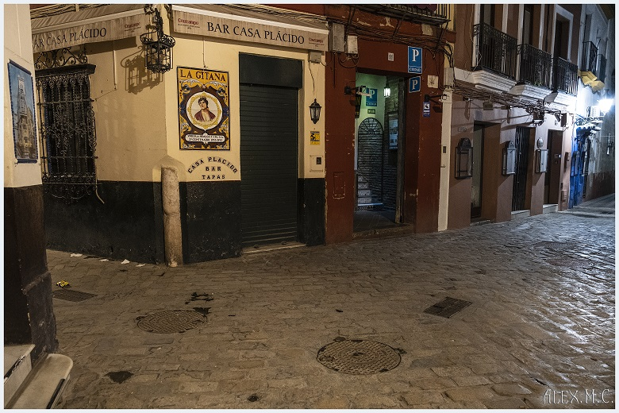
Callejon Sta. Cruz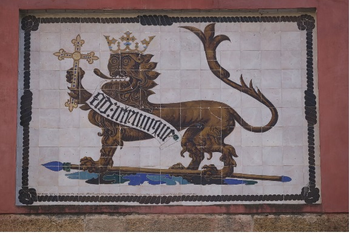
Leon Alcazar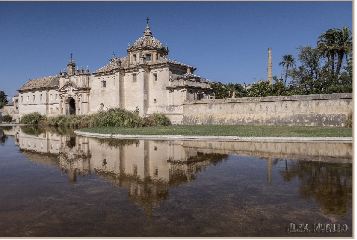
Monasterio La Cartuja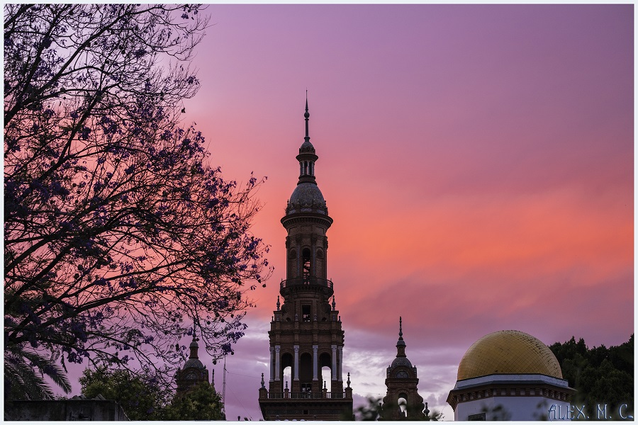
Puesta de sol rosado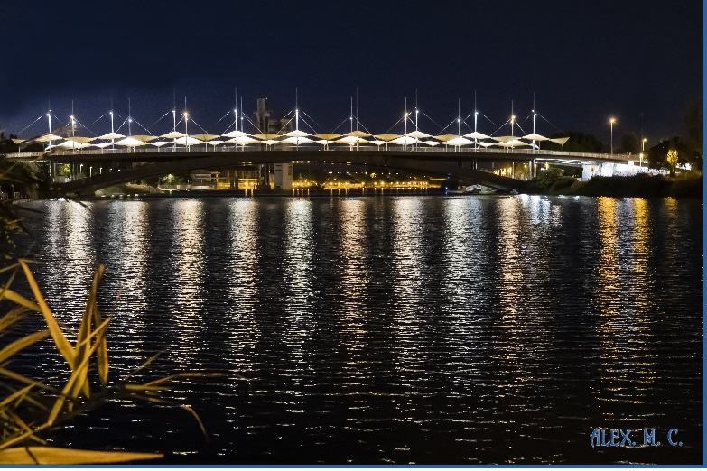
Puente Chapina Nocturna
Pinaculos Catedral
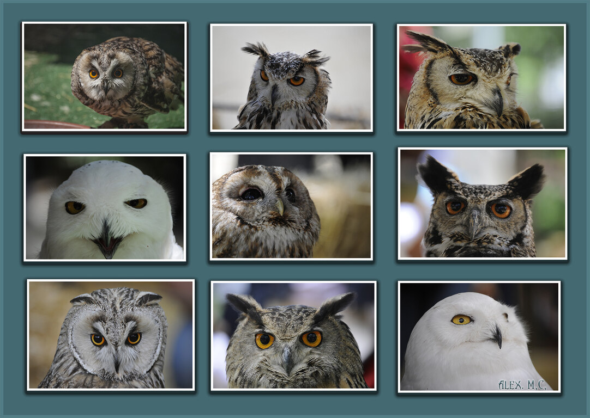
Miradas Buhos Lechuzas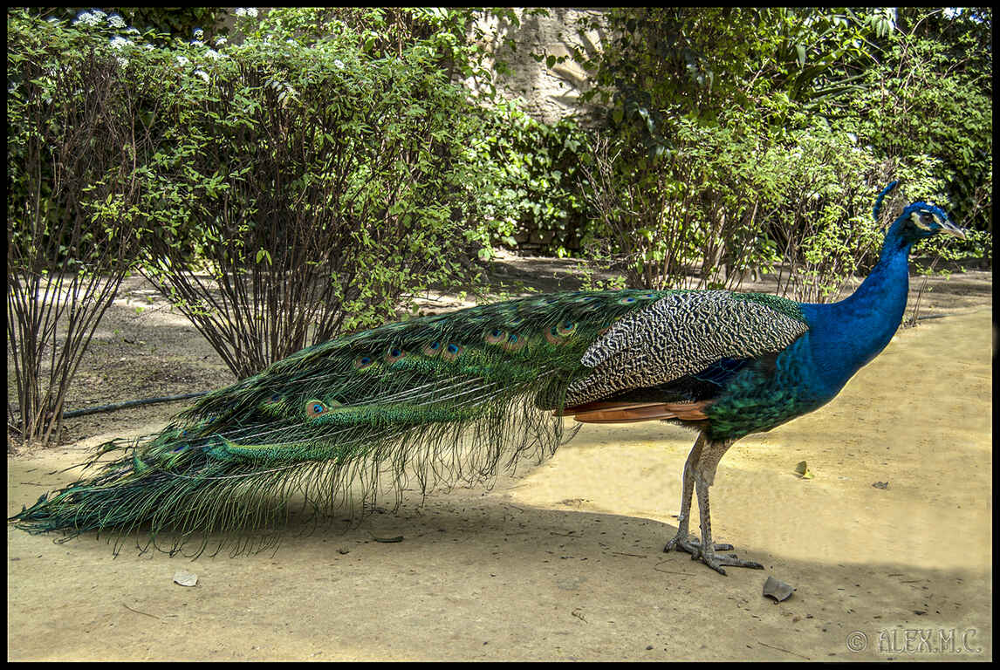
Pavo real del Alcazar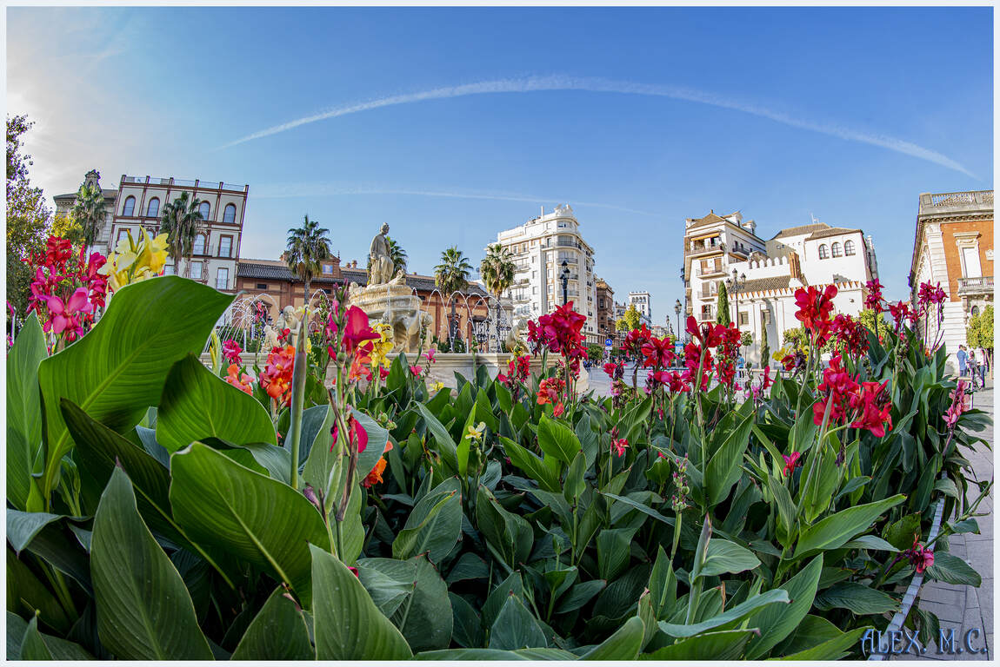
Flores fuente Hispalis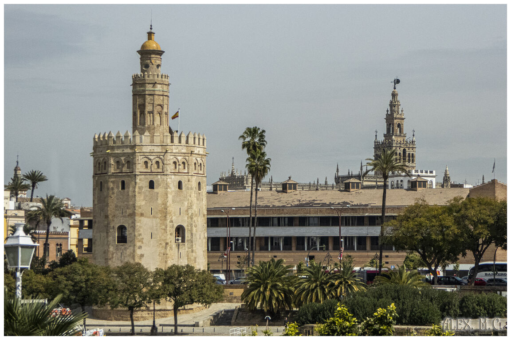
Las dos torres sevillanas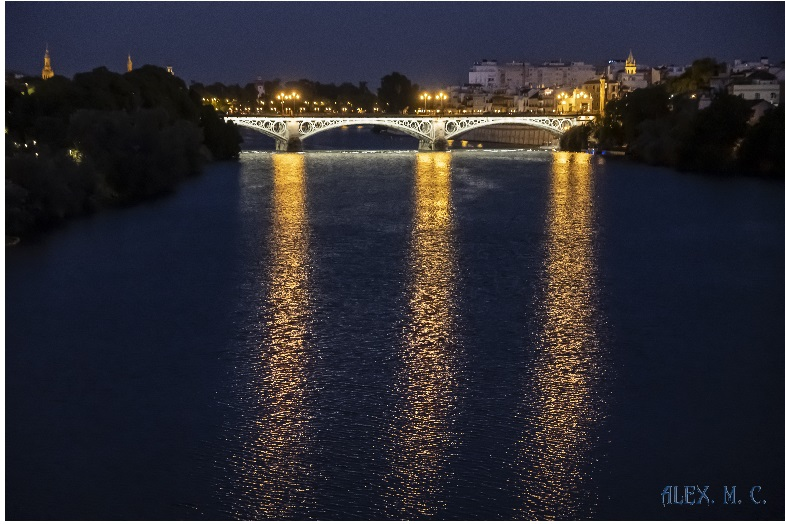
Puente Triana nocturna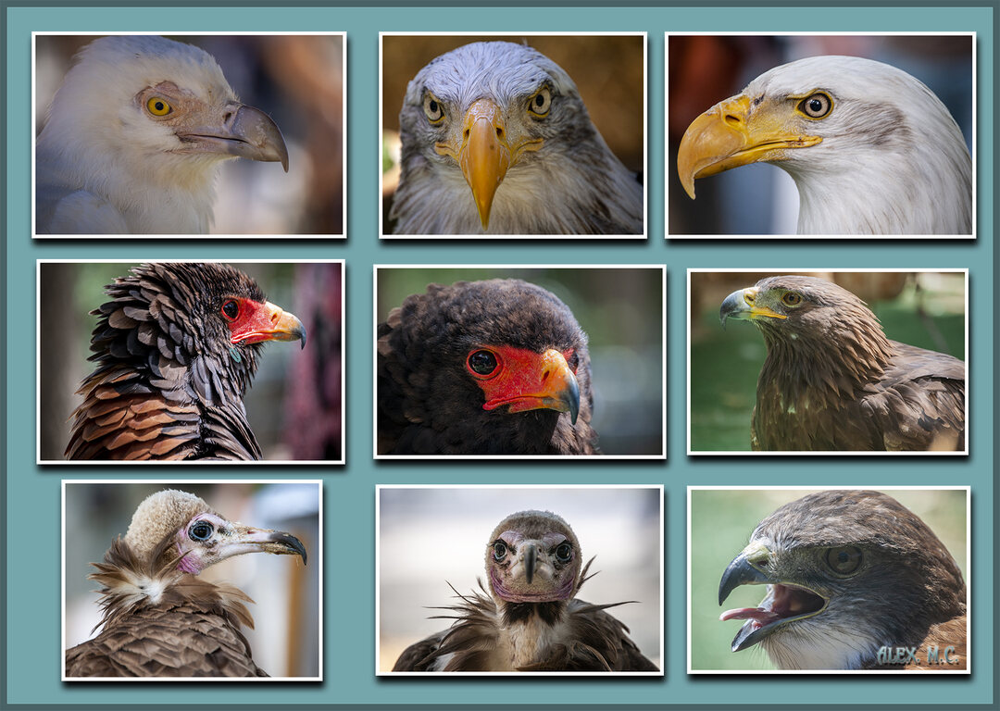
Miradas Aguilas y Buitres